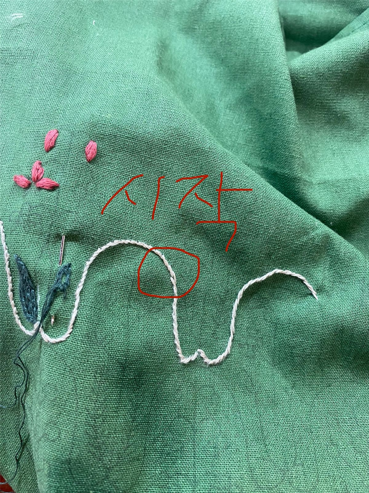
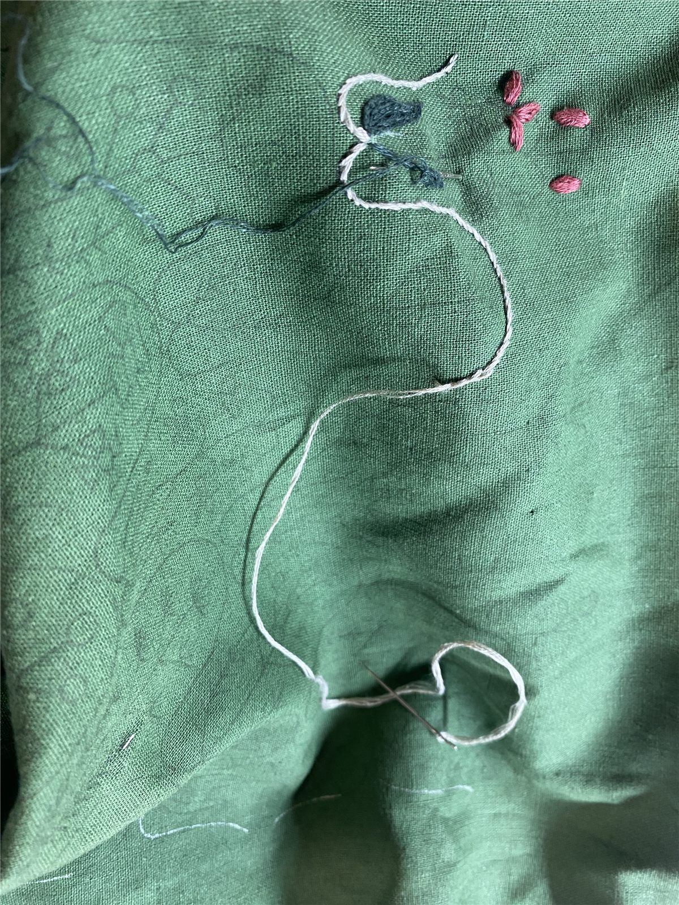
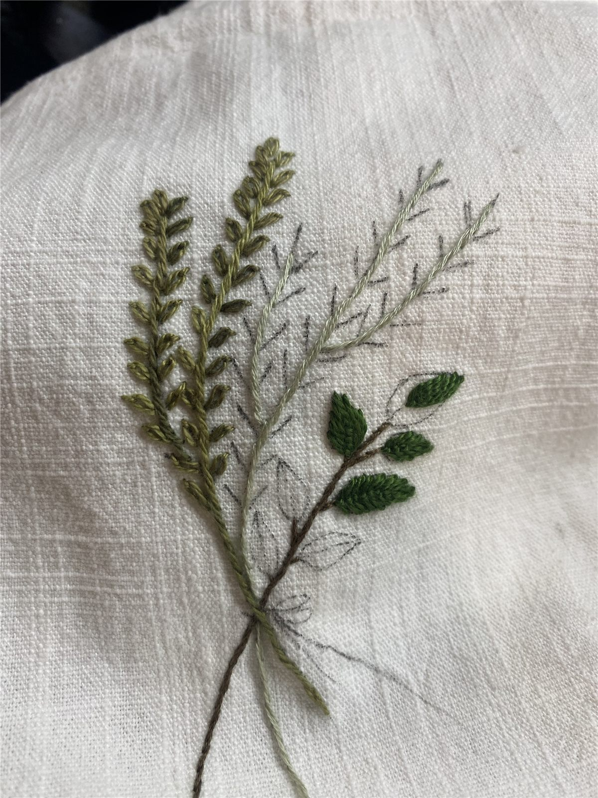
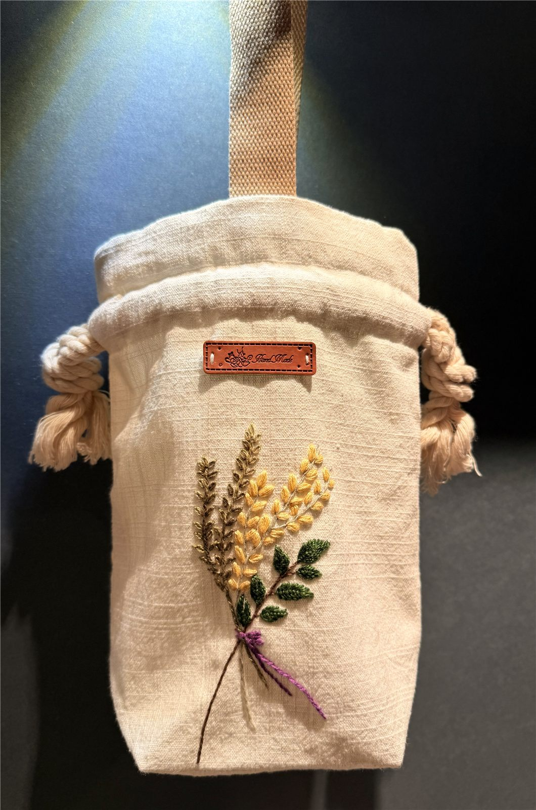
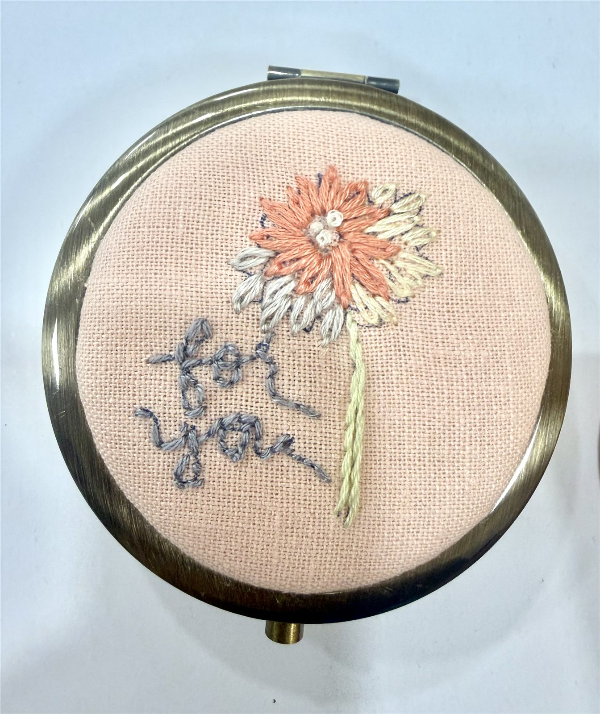
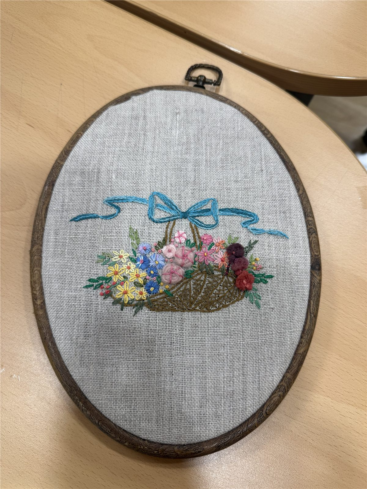
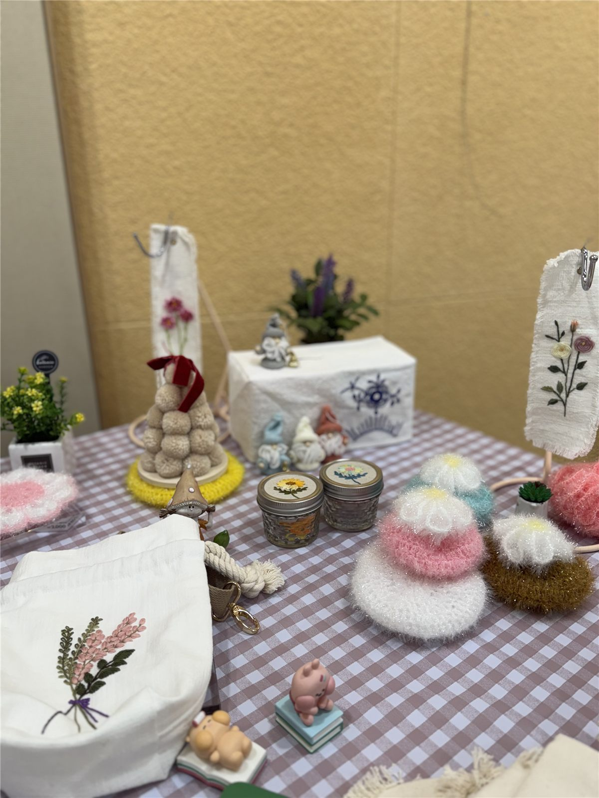
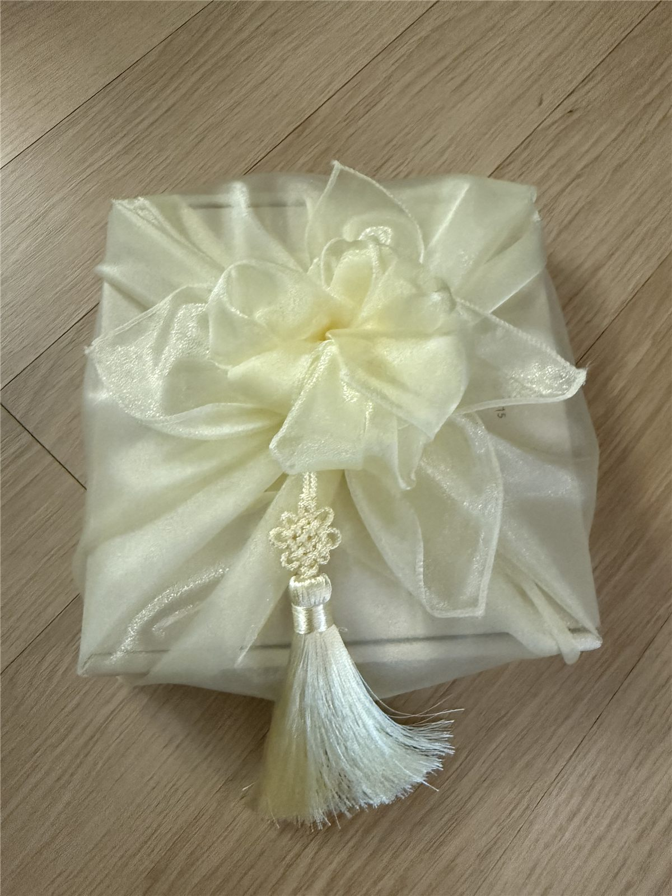

첫 번째 모임
바늘에 실 꿰기부터, 첫 스티치
초록 리넨 위에 도안을 옮기고 체인 스티치와 레이지데이지로 첫 땀을 떴어요. “여기서 시작!” 표시가 우리의 출발점이에요.


따땀이 함께 걸어온 한 땀 한 땀의 기록
초록 리넨 위에 도안을 옮기고 체인 스티치와 레이지데이지로 첫 땀을 떴어요. “여기서 시작!” 표시가 우리의 출발점이에요.


피시본·스템·플라이 스티치로 풀잎을 연습하고, 그 실력으로 밀 이삭 복주머니를 완성했어요.


손거울과 수틀 액자처럼 늘 곁에 두는 물건에 꽃을 수놓았어요.


그동안 만든 에코백, 뜨개 수세미, 자수 소품들을 한자리에 모았어요. 서로의 작품을 구경하며 이야기꽃을 피웠답니다.


완성한 작품을 오간자 보자기와 매듭 술로 곱게 싸서 고마운 분들께 선물했어요.

모임 전에 한 번씩 확인해 주세요.